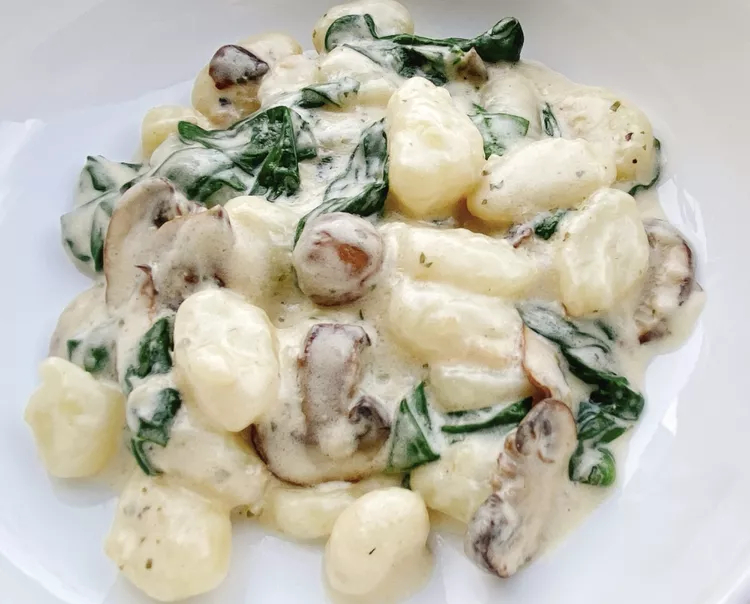

Mushroom Gnocchi

Description
Mushroom and spinach gnocchi in a creamy cheese sauce.
Ingredients
- 1 package gnocchi
- 1 tablespoon unsalted butter
- 1 cup sliced mushrooms
- 4 cloves garlic
- 1/4 cup heavy whipping cream
- 4 cups baby spinach
- 1/2 red onion
- 1 cup parmesan cheese
Steps
- Bring a large pot of lightly salted water to a boil. Cook gnocchi in the boiling water until they float to the top, 2 to 4 minutes.
- Meanwhile, melt butter in a heavy skillet over medium-high heat. Add sliced mushrooms and diced onions then cook until softened, about 3 minutes. Add garlic and continue to cook until fragrant, about 30 seconds. Reduce heat, and pour in cream.
- Place spinach in the bottom of a colander and drain the gnocchi over the spinach to wilt it.
- Stir cheese into the skillet and keep stirring until cheese is melted.
- Add gnocchi and wilted spinach to the skillet and stir until well combined. Serve and enjoy!